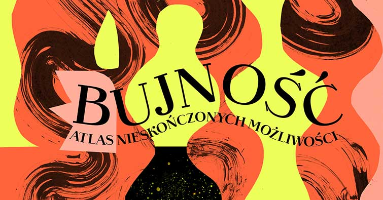
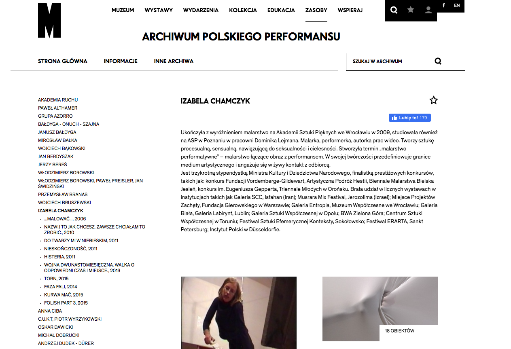
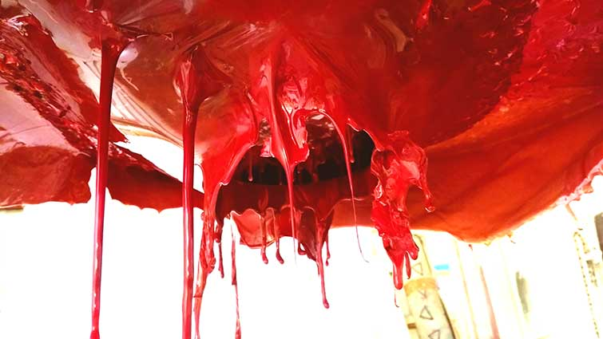

Aktualności
Wystawa zbiorowa podsumowująca 20 lat konkursu Artystyczna Podróż Hestii:
"Bujność. Atlas nieskończonych możliwości"

indywidualna wystawa malarstwa performatywnego pt. TOXIC

"Zajmuję się sztuką, ponieważ nie umiem inaczej. Sztuka jest moją pasją i życiem. Dzięki niej wypowiadam się, przerabiam ważne tematy i stwarzam nowe rzeczywistości. Bycie artystką traktuję jako mój zawód, ale jest to też moja tożsamość. Na pytanie kim jestem? — odpowiadam — artystką."
Więcej na temat mojej twórczości można znaleźć na stronie SECONDARY ARCHIVE — Archiwum artystek stworzonym we współpracy z Fundacją Katarzyny Kozyry oraz Zachętą Narodową Galerią Sztuki, w którym się znalazłam.

Dziesięć z moich dokumentacji performance znalazło się w ARCHIWUM POLSKIEGO PERFORMANSU w Muzeum Sztuki Nowoczesnej w Warszawie

Wystawa indywidualna pt. "SERIOUSLY SALTY. Nowe materializacje"

fot. Andrzej Rerak
Wystawa online pt. "PRZESTRZEŃ ZAMKNIĘTA/OTWARTA"
Gdzie prezentowane są zdjęcia z procesu tworzenia moich OBRAZÓW PERFORMATYWNYCH
kurator: Grzegorz Borkowski

Izabela Chamczyk. Koniec Końców — performance online
Trzeci performance online w ramach cyklu "CODZIENNOŚĆ". Cykl performance Izabeli Chamczyk odnosi się do sytuacji pandemii i nawiązuje do aktualnych wydarzeń. Każde kolejne działanie jest odpowiedzią na zmieniającą się rzeczywistość. Poprzez medium ciała artystka oddaje stan, kondycję i emocje społeczne.
transmisja na Facebooku BWA Wrocław Główny oraz BWA Wrocław
Partnerzy: lokal_30 w Warszawie, CSW Kronika w Bytomiu, BWA Wrocław
Zrealizowano w ramach programu stypendialnego Ministra Kultury i Dziedzictwa Narodowego — Kultura w sieci.

Zapraszam na wystawę online PRZESTRZEŃ OTWARTA/ZAMKNIĘTA, gdzie prezentowane jest moje malarstwo performatywne
kurator: Grzegorz Borkowski
Galeria ODA Piotrków Trybunalski
Malarstwo performatywne powstało dzięki wsparciu Stypendium z Fundusz Popierania Twórczości ZAiKS
Złoty środek — performance online
Drugi performance online w ramach cyklu "CODZIENNOŚĆ". Cykl performance Izabeli Chamczyk odnosi się do sytuacji pandemii i nawiązuje do aktualnych wydarzeń. Każde kolejne działanie jest odpowiedzią na zmieniającą się rzeczywistość. Poprzez medium ciała artystka oddaje stan, kondycję i emocje społeczne.
transmisja na Facebooku galeria lokal_30
Partnerzy: lokal_30 w Warszawie, CSW Kronika w Bytomiu, BWA Wrocław
Zrealizowano w ramach programu stypendialnego Ministra Kultury i Dziedzictwa Narodowego — Kultura w sieci.
Początek końca — performance online
Pierwszy performance online w ramach cyklu "CODZIENNOŚĆ". Cykl performance odnosi się do sytuacji pandemii i nawiązuje do aktualnych wydarzeń. Każde kolejne działanie jest odpowiedzią na zmieniającą się rzeczywistość. Poprzez medium ciała artystka oddaje stan, kondycję i emocje społeczne.
transmisja na Facebooku Kronika
Partnerzy: CSW Kronika w Bytomiu, lokal_30 w Warszawie, BWA Awangarda we Wrocławiu.
Zrealizowano w ramach programu stypendialnego Ministra Kultury i Dziedzictwa Narodowego — Kultura w sieci.